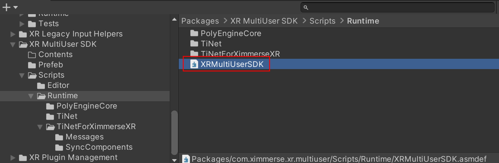
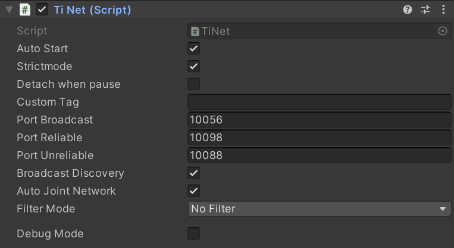
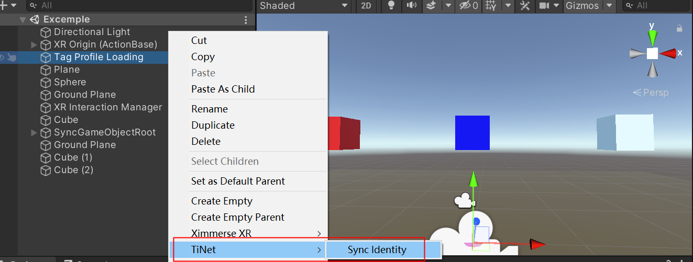
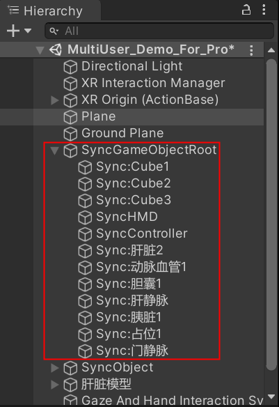
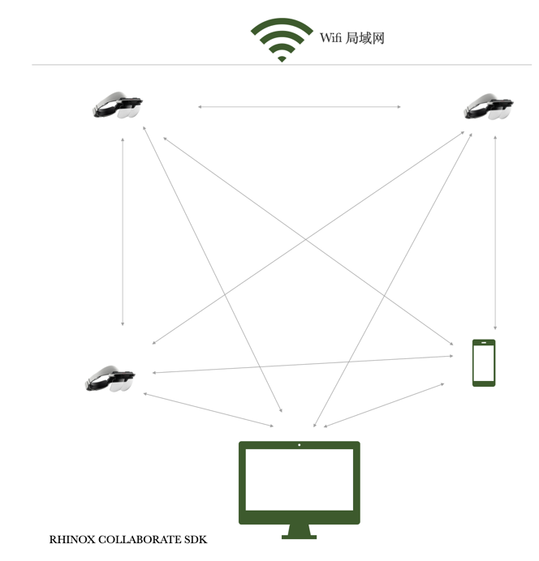
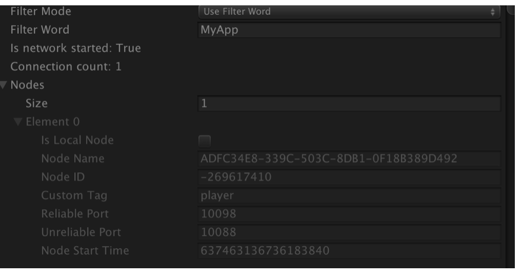
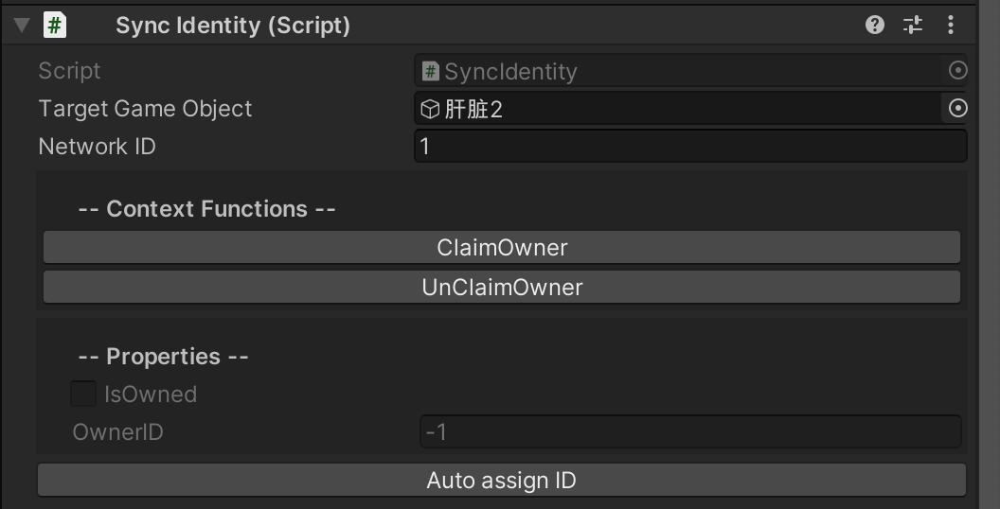
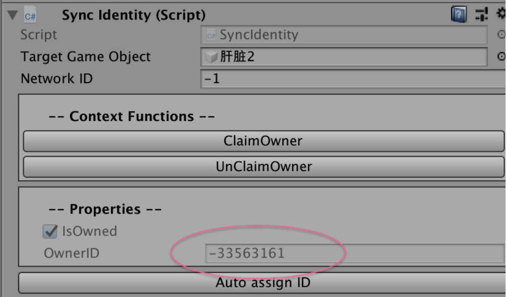

多用户协同网络工具库
如果您需要实现多用户协同使用的场景，可以参考此章节。

工具库下载请点击： 多人协同工具包
如果您是初次接触网络同步开发，您可以在 示例教程 中查看详细文档进行入门学习
1 概述
多用户协同网络库是专为以下应用场景设计的工具库:
多个 Rhino X Pro用户在同一个物理房间内协同交互。
使用手机的用户在上述物理空间中, 观察/协同上述 Rhino X Pro用户的交互。此功能还需结合 移动端MR应用定位系统 功能库。
使用电脑的用户, 通过固定摄像头, 在上述空间中和Rhino X Pro用户交互。此功能还需结合 电脑端MR应用定位系统 功能库。
Note
除了多用户协同网络工具库， 还有很多第三方网络工具库可以实现上述功能，例如 Unity 官方推出的 Multiplayer, Photon的Bolt系列, DarkRift Networking 等等。
大多数网络工具库都是按照经典的 Client - Server 中心化拓扑结构实现。这种结构中都有至少一个中心服务器和若干个客户端组成。 服务器负责调度信息的派发，客户端监听信息并负责渲染和用户呈现。
多用户协同网络工具库和上述C/S网络结构不同之处在于, 它是基于去中心化的P2P拓扑结构， 多个网络节点之间是相互直连的蛛网式结构。
2 优势以及限制:
优势
轻便, 不需要部署服务器。 终端设备只要接入局域网即可。
兼容所有设备， 无论PC，安卓手机，苹果手机 ，RhinoX 头显都可以使用。
开发逻辑既能实现P2P结构，也能兼容C/S结构。
限制
目前只支持局域网。
相比于经典C/S结构，对于一些强中心化的需求, 例如AI的同步, 环境物体的状态同步，稍显复杂。
3 类结构介绍:
核心库: XRMultiUserSDK.dll
多用户协同网络工具库和核心类都封装在此动态链接库中。
核心类: TiNet
TiNet 是多用户协同工具库的核心类, 负责网络节点之间的互连, 消息的投递和接收。
开源网络应用代码包: Ti-Net-Sync
多用户协同网络工具库和核心类都封装在此动态链接库中。这些开源代码是基于 TiNet 核心类实现的网络应用示例。
Note
Ti-Net-Sync 是基于 TiNet 核心库实现的应用示例。 不代表此网络工具库的全部功能， 用户可以基于这些sample code， 按照自己的实际需求做定制化开发。
4 核心类Tinet介绍：
Tinet主要负责网络节点之间的互连以及消息收发，在一个场景中有且只能有一个Tinet Script。我们可以通过鼠标右键选择 需要同步的模型，通过 TiNet->Sync Identity 来一键创建同步需要用到的组件，此时会自动帮助您创建一个 SyncGameObjectRoot， 此物体上会挂载 Tinet Script，同步模型的组件在此目录下面。
 1.TiNet类的工作流程
一个典型的Rhino X Pro多用户协同应用的网络结构如下图所示:
此结构中，包括有以下节点: Rhino X Pro 用户， 电脑观察端，手机观察端。
设备之间建立通信的过程如下:
SDK启动, 获取自身IP地址。
SDK在本地监听一个 TCP 端口和一个 UDP 端口。相当于在设备上启动一个本地服务器。
自动向本地网关广播身份信息。 广播的身份信息包括设备自身的IP地址, 自身启动的TCP/UDP端口, 自身的Custom Tag(身份标识), Filter Word (过滤关键字)。 广播信息每一秒发送一次。
其他设备收听到广播的身份信息后, 跟踪 Filter Word 决定是否需要建立链接, 如果 Filter Word 条件满足, 则建立连接。 连接方式包括 TCP 和 UDP 连接。
2.TiNet类字段属性详解
AutoStart : 是否自动启动TiNet的网络连接功能。如果为false，需要开发者调用 TiNet.Instance.StartNetworking() 方法启动网络。
Strictmode: 此接口调试使用，默认True即可
Detach when pause : 是否在应用切回后台的时候, 切断网络连接。 对于Rhino X Pro或者手机应用， 切回后台的方式是按Home键。 对于电脑端应用， 切回后台的方式是将应用窗口最小化。
Custom tag : 身份标记。 此字段用于提供节点的身份标记。例如，Rhino X Pro用户可以给自身tag设置为 Rhino X Pro User, 手机端 MR 可以给自身tag设置为 MR Mobile。用户通过 I_TiNetNode.CustomTag 获取相连节点的 Tag.
Port broadcast : 广播自动发现身份信息的网络端口。 应用之间必须使用同一个端口才能互相发现，可自定义此端口。
Port reliable : TCP 通讯端口，可自定义此端口。
Port unreliable : UDP 通讯端口，可自定义此端口。
Broadcast discovery : 是否广播身份信息。如果为false，则不会广播身份信息。 此字段适用于一些特殊的场景, 因为局域网广播所需要绑定的IP: 0.0.0.0 是一种不可复用的IP资源, 有可能存在同应用内，其他程序也需要绑定此 IP, 所以此字段的目的用于协调这种情况。当Broadcast discovery = false的时候, tinet 不会广播自身的身份信息，也就是不会自动和其他网络节点建立连接, 开发者需要调用 TiNet.Instance.TryConnectsTo() 方法建立连接。
Auto joint network : 是否自动加入网络。如果为false，即使收到了来自远端的身份广播信息, 也不会自动加入网络。
Filter Mode : 过滤模式, 可以使用filter mode + filter word 字段，过滤不属于同一个条件的节点。 例如， 如果 Filter Word = MyApp，则TiNet只会连接到其他的也是同一个关键字的网络节点。
当TiNet启动以后，显示面板会显示出它的已连接节点:
NodeName / Node ID : 是对方节点的名字和ID属性。
NodeName = SystemInfo.deviceUniqueIdentifier: 是和机器绑定的固定值。
Node ID: 是一个随机值,每次启动都会变化。
Custom Tag : 对方的tinet面板的Custom Tag。
Reliable port / Unreliable port : 对方的通信端口。
Node start time: 对方tinet 的启动时间戳。
开发者使用 TiNet.Instance.GetAllNodes(List<I_TiNetNode> Nodes) 获取当前所有连接的节点。
5 SyncIdentity类和网络对象的权限管理
每个能被同步的网络物体, 都使用 SyncIdentity 类来标记其唯一ID. SyncIdentity 类不一定要附着在同步GameObject，可以和同步GameObject分离。
Target GameObject : 要同步的目标对象.
Network ID : 唯一ID。 场景中所有的 SyncIdentity 的 Network ID 不能重复。
ClaimOwner 和 UnclaimOwner 按钮 : 分别触发 SyncIdentity.ClaimOwner() 和 UnclaimOwner() 方法。 关于这两个方法的用途，请见此章后段的详细解释。
IsOwned 和 OwnerID 属性 : 标记此网络同步对象当前的拥有者节点ID. 如果此网络对象没有被任何网络节点拥有，则OwnerID = -1.
网络对象的权限
在经典的C/S网络架构中, 存在一个中心服务器, 所以大部分的网络对象, 都是由中心服务器来统一管理的。
例如，假设在一个网络游戏中，有三个玩家角色，若干个NPC角色. 我们以玩家和NPC角色的位置更新逻辑距离。
玩家角色的位置同步
当玩家角色移动的时候，其角色的位置会由玩家所控制器的客户端实时将自身的位置发送给服务器。服务器收到数据后，会校验这个位置是否合理，在排除了作弊，数据包错误等可能后，服务器 内部更新此玩家角色对象的位置， 然后将位置广播给其他的客户端程序。 而其他客户端程序收到角色位置信息后，自动更新自身程序内的此玩家角色的位置信息。
所以玩家角色的位置信息更新流程是 : 玩家 -> 服务器 -> 其他玩家.
可以看出，在经典C/S结构中， 玩家对象的权限属于玩家自身管理。
NPC角色的位置同步
由于NPC不属于任何玩家所控制，NPC的角色位置由服务器统一控制。 服务器只需要把NPC的位置广播给所有的玩家客户端， 而玩家客户端在收到来自服务器的NPC角色位置信息后， 自动更新本客户端程序内的NPC角色的位置数据。
所以NPC角色的位置信息更新流程是 : 服务器 -> 其他玩家
所以在经典C/S结构中， NPC对象的权限属于中心服务器管理。
以 TiNet 为核心的网络结构中，网络对象的权限管理
TiNet 网络是一个去中心化的拓扑结构，无论是属于玩家自身的物体（例如：RhinoX 用户的头部位置，双手控制器的位置），还是”NPC物体”的位置，其权限管理的核心思路都和 中心化的C/S结构有很大的不同。
SyncIdentity 的 Owner ID : TiNet 使用 SyncIdentity 类标记网络物体的唯一ID和其权限所有者节点的ID. 当用户需要改变某个物体的属性 （包括其位置，朝向，颜色，显隐状态等等）的时候， 需要先调用 SyncIdentity 的 ClaimOwner() 方法, 此方法会广播一条 ClaimOwnerMessage 消息给所有的网络节点， 占据目标对象的权限。 而其他网络节点收到此消息后， 会自动将此目标对象 的权限拥有者设置为ClaimOwnerMessage消息中的所标记的网络节点。
当权限变更以后，SyncIdentity的inspector 界面上显示的Owner ID字段会变化为权限拥有者的ID, 如下图:
当SyncIdentity的权限被某一个节点获取后, 此节点就可以改动此对象的属性了。
应用示例: SyncGrabable.cs
SyncGrabable所实现的功能 : 当抓取发生的时候， SyncGrabable 脚本调用Grabable对象上的SyncIdentity 的ClaimOwner()方法, 当用户松开按键的时候, SyncGrabable 调用Grabable对象上的SyncIdentity 的UnClaimOwner()方法，释放Grabable对象的权限, 其他用户在原用户放下对象之后， 可以再抓取此对象。 一个时刻内， SyncIdentity的权限只会被一个节点所占据。
{
/// <summary>
/// Sync grabable:
/// - 在 target grabable 被其他的 TiNet node claim owner的时候disable grabable;
/// - 在 target grabable 的 权限被解除的时候， enable grabable;
/// - 在自己抓取的时候， claim owner
/// - 在自己释放的时候， release owner
/// </summary>
[RequireComponent(typeof(SyncIdentity))]
public class SyncGrabable : MonoBehaviour
{
SyncIdentity syncId;
[SerializeField]
XRGrabInteractable grabable;
bool isRigidKinatmicBeforeGrabbed;
// Start is called before the first frame update
void Awake()
{
syncId = GetComponent<SyncIdentity>();
if (!syncId)
return;
if (!grabable)
grabable = syncId.TargetGameObject.GetComponent<XRGrabInteractable>();
if (!grabable)
{
return;
}
Ximmerse.XR.SyncIdentity.OnClaimOwnershipByOtherNode += SyncIdentity_OnClaimOwnershipByOtherNode;
/// - 在自己抓取的时候， claim owner
/// - 在自己释放的时候， release owner
grabable.firstSelectEntered.AddListener(Grabable_OnGrabBegin);
grabable.lastSelectExited.AddListener(Grabable_OnGrabEnd);
}
private void SyncIdentity_OnClaimOwnershipByOtherNode(Ximmerse.XR.SyncIdentity _syncId, Ximmerse.XR.UnityNetworking.I_TiNetNode node, bool isClaimed)
{
if (_syncId == syncId)
{
//被其他节点抓取:
if (isClaimed)
{
grabable.enabled = false;
if(grabable.GetComponent<Rigidbody>())
{
var rigid = grabable.GetComponent<Rigidbody>();
isRigidKinatmicBeforeGrabbed = rigid.isKinematic;
if(!rigid.isKinematic)
{
rigid.isKinematic = true;
}
}
}
//被其他节点释放:
else
{
grabable.enabled = true;
if (grabable.GetComponent<Rigidbody>())
{
var rigid = grabable.GetComponent<Rigidbody>();
if(!isRigidKinatmicBeforeGrabbed)
{
rigid.isKinematic = false;
}
}
}
}
}
private void OnDestroy()
{
if (grabable)
{
grabable.firstSelectEntered.RemoveListener(Grabable_OnGrabBegin);
grabable.selectExited.RemoveListener(Grabable_OnGrabEnd);
}
SyncIdentity.OnClaimOwnershipByOtherNode -= SyncIdentity_OnClaimOwnershipByOtherNode;
}
/// <summary>
/// uncliam owner when the grabble is releasing
/// </summary>
/// <param name="args"></param>
private void Grabable_OnGrabEnd(SelectExitEventArgs args)
{
syncId.UnClaimOwner();
}
/// <summary>
/// claim owner when the grabble is being grabbed
/// </summary>
/// <param name="args"></param>
private void Grabable_OnGrabBegin(SelectEnterEventArgs args)
{
syncId.ClaimOwner();
}
}
}
Note
总结: 在TiNet的P2P网络中，每个网络对象都需要通过ClaimOwner / UnClaimOwner 方式，实现对某个网络对象的权限获取与释放。只有当网络对象的权限被当前节点所拥有的时候，当前节点才能修改此对象的网络属性。
6 自定义网络消息
我们提供了一些常用的同步方法，如SyncTransform，SyncController等，如果您需要实现一些特殊的同步操作，可以参考 该章节自定义网络消息，实现同步。
在网络中传递数据的方式是通过 TiNetMessage 实现的。 开发者需要把同步数据封装在 TiNetMessage 的实现类上。
下面以 SyncTransformMessage 为例，说明如何继承实现 TiNetMessage 类。
using Ximmerse.XR.UnityNetworking;
using UnityEngine;
using TiNetMessgae = Ximmerse.XR.UnityNetworking.TiNetMessage;
namespace Ximmerse.XR
{
[Message(MessageCode.kSyncTransform)]
public class SyncTransformMessage : Ximmerse.XR.UnityNetworking.TiNetMessage
{
public int OwnerID;
public int NetworkID;
public long TimeTicks;
public Vector3 WorldPosition;
public Quaternion WorldRotation;
public Vector3 Scale;
public bool IsFirstMessage;
/// <summary>
/// The datetime from TimeTicks
/// </summary>
public System.DateTime time
{
get
{
return new System.DateTime(TimeTicks);
}
set
{
TimeTicks = value.Ticks;
}
}
/// <summary>
/// 从网络读取数据
/// </summary>
public override void OnDeserialize()
{
OwnerID = ReadInt();
NetworkID = ReadInt();
TimeTicks = ReadLong();
WorldPosition = ReadVector3();
WorldRotation = ReadQuaternion();
Scale = ReadVector3();
IsFirstMessage = ReadBool();
}
/// <summary>
/// 向网络写出数据
/// </summary>
public override void OnSerialize()
{
WriteInt(OwnerID);
WriteInt(NetworkID);
WriteLong(TimeTicks);
WriteVector3(WorldPosition);
WriteQuaternion(WorldRotation);
WriteVector3(Scale);
WriteBool(IsFirstMessage);
}
}
}
Note
开发者要实现自定义消息发送网络消息，需要以下操作:
1.创建一个消息类，继承 TiNetMessage 。
2.为新的消息类，使用 MessageAttribute, 声明一个 short 类型的消息码。此消息码必须唯一,不能和别的消息类的消息码重复。而且必须大于 0x0010。
3.在 OnSerialize() 方法中，使用 TiNetMessage 的 Write 方法组，将自身的数据写入到网络中。
4.在 OnDeserialize() 方法中, 使用 TiNetMessage 的 Read 方法组， 按照序列化的顺序， 将Serialize()中写入的数据读取出来。
TiNetMessage 类提供以下方法，实现不同数据类型的写入和读取操作。
以下这些方法都是 protected 声明, 开发者可以在自定义的TiNetMessage中调用这些方法以读写网络数据。
类 |
方法 |
|---|---|
bool |
ReadBool() / WriteBool() |
bool[] |
ReadBools() / WriteBoolArray() |
byte |
ReadByte() / WriteByte() |
byte[] |
ReadBytes() / WriteByteArray() |
short |
ReadShort() / WriteShort() |
short[] |
ReadShorts() / WriteShortArray() |
int |
ReadInt() / WriteInt() |
int[] |
ReadInts() / WriteIntArray() |
long |
ReadLong() / WriteLong() |
long[] |
ReadLongs() / WriteLongArray() |
float |
ReadFloat() / WriteFloat() |
float[] |
ReadFloats() / WriteFloatArray() |
string |
ReadString() / WriteString() |
strings |
ReadStrings() / WriteStringArray() |
Vector2 |
ReadVector2() / WriteVector2() |
Vector2[] |
ReadVector2s() / WriteVector2Array() |
Vector3 |
ReadVector3() / WriteVector3() |
Vector3[] |
ReadVector3s() / WriteVector3Array() |
Quaternion |
ReadQuaternion() / WriteQuaternion() |
Quaternion[] |
ReadQuaternions() / WriteQuaternionArray() |
7 发送数据
在上一章节中，我们实现了一个 SyncTransformMessage, 此消息类的功能是将一个Transform的位置和姿态信息发送给其他的网络节点。
以下代码示例如何发送消息:
/// <summary>
/// 以下代码示范如何发送网络消息。
/// </summary>
/// <param name="node"></param>
private void SendSyncMessage(I_TiNetNode node)
{
SyncTransformMessage syncTransMessage = TiNetUtility.GetMessage<SyncTransformMessage>(); //从缓存池中获取一个 SyncTransformMessage 消息对象。
//给消息体赋值:
syncTransMessage.NetworkID = this.SyncIdentity.NetworkID; //网络唯一id
syncTransMessage.OwnerID = TiNetManager.NodeID;//改变此transform的拥有者的网络节点id
syncTransMessage.TimeTicks = DateTime.Now.Ticks;//时间戳
syncTransMessage.WorldPosition = syncTransform.position;//位置
syncTransMessage.WorldRotation = syncTransform.rotation;//朝向
syncTransMessage.Scale = syncTransform.localScale;//缩放
//如果node为null，则以udp通道发送给全部的节点
if(node == null)
{
syncTransMessage.SendToAllUnreliable();
}
else
{
//以tcp通道发送给指定节点
syncTransMessage.SendToReliable(node);
}
}
两种通道 : Reliable 和 Unreliable
TiNet支持ReliableMessage和UnreliableMessage. ReliableMessage通过 TCP/IP协议发送 ， UnreliableMessage通过 UDP协议发送。
两种通道相比, TCP 通道适合发送确定性的，不能被丢失的，低频的消息。 例如: 网络物体的权限的获取/释放。
UDP通道适合发送高频的，可以偶尔丢失的消息， 例如: RhinoX用户头部的实时位置和朝向， 这些数据偶尔丢失一帧并没有很大的影响。
Unreliable 方法:
TiNetMessage.SendToAllUnreliable(); //此方法发送给所有的和当前TiNetNode互相连通的节点。使用的是UDP协议，存在丢包的可能。
TiNetMessage.SendToUnreliable(I_TiNetNode Node); //此方法发送给指定的 TiNetNode节点。使用的是UDP协议，存在丢包的可能。
Reliable方法:
TiNetMessage.SendToAllReliable(); //此方法发送给所有的和当前TiNetNode互相连通的节点。使用TCP/IP协议，保证传输可靠性。
TiNetMessage.SendToReliable(I_TiNetNode Node); //此方法发送给指定的 TiNetNode节点。使用TCP/IP协议，保证传输可靠性。
获取所有的连接节点的方法:
TiNet.Instance.GetAllNodes();
8 接收数据
以位置同步消息的实现模式为例, 如下代码可以监听 SyncTransformMessage 消息:
// <summary>
// Sync transform
// </summary>
RequireComponent(typeof(SyncIdentity))]
public class SyncTransform : MonoBehaviour, TiNetMessageHandler
/// <summary>
/// Message callback : on transform message received.
/// </summary>
[TiNetMessageCallback(MessageCode.kSyncTransform)]
static void OnSyncTransformMessage(TiNetMessage message, I_TiNetNode node)
{
SyncTransformMessage syncTransMsg = message as SyncTransformMessage;
int networkID = syncTransMsg.NetworkID;
//Debug.LogFormat("On sync transform message : {0}", networkID);
//同步 sync transform 信息:
if(SyncIdentity.Get(networkID, out SyncIdentity entity) && entity != null && entity.IsOwned == false && entity.HasComponent(out SyncTransform syncT))
{
long syncTime = syncTransMsg.TimeTicks;
//只取时间戳最新的更新:
if(syncT.m_SyncTimeStamp.HasValue == false || syncT.m_SyncTimeStamp.Value < syncTime)
{
syncT.m_PreviousOwnerID = syncTransMsg.OwnerID;
syncT.m_SyncTimeStamp = syncTransMsg.TimeTicks;
Transform t = entity.TargetGameObject.transform;
t.position = syncTransMsg.WorldPosition;
t.rotation = syncTransMsg.WorldRotation;
t.localScale = syncTransMsg.Scale;
syncT.OnSyncTransformChanged?.Invoke(t.gameObject);
}
}
}
}
Note
开发者要监听自定义消息，需要以下操作:
1.创建一个自定义Monobehaviour 实现 TiNetMessageHandler 接口.
2.声明一个静态方法，加上 TiNetMessageCallback 属性签名, 并将自定义消息的消息码（也就是示例代码中的 MessageCode.kSyncTransform） 交给TiNetMessageCallback属性的构造参数。并且静态方法的签名必须是 void FunctionName(TiNetMessage message, I_TiNetNode node) . message 就是收到的消息, node 是发送此消息的节点。
3.在静态方法中, 将message参数转换为要处理的自定义消息类即可读取它的数据了。
Warning
TiNet系统使用C#反射机制将消息类和对应的静态处理方法做映射关联, 如果在打包apk的时候，打开了 Code Stripping 开关, 会导致被声明为 private static 的静态处理方法在打包过程被Unity引擎从最终生成的二进制库中移除。
解决办法是 : 关闭 Code Stripping 开关，或者使用 link.xml 将 PolyEnginePlugins.dll 和上层代码声明为 preserved.
关于 link.xml 文件的用法，见 Unity 官网文档: https://docs.unity3d.com/Manual/ManagedCodeStripping.html
<linker>
<assembly fullname="TiNetSync" preserve="all"/>
<assembly fullname="PolyEnginePlugins" preserve="all"/>
</linker>
用于同步网络对象的transform 的 SyncTransform.cs 完整代码:
using System.Collections;
using System.Collections.Generic;
using Ximmerse.XR.UnityNetworking;
using UnityEngine;
using System;
using I_TiNetNode = Ximmerse.XR.UnityNetworking.I_TiNetNode;
using TiNet = Ximmerse.XR.UnityNetworking.TiNet;
using TiNetMessageCallback = Ximmerse.XR.UnityNetworking.TiNetMessageCallbackAttribute;
using TiNetMessage = Ximmerse.XR.UnityNetworking.TiNetMessage;
using TiNetUtility = Ximmerse.XR.UnityNetworking.TiNetUtility;
namespace Ximmerse.XR
{
/// <summary>
/// Sync transform
/// </summary>
[RequireComponent(typeof(SyncIdentity))]
public class SyncTransform : TiNetMonoBehaviour
{
/// <summary>
/// 最近一次更新 transform 的时间戳。
/// </summary>
long? m_SyncTimeStamp;
/// <summary>
/// Sync interval.
/// </summary>
[MinValue (0.01f)]
public float SyncInterval = 0.05f;
float m_LastSyncTime;
/// <summary>
/// 对上一次更新的 Owner ID。
/// </summary>
private int m_PreviousOwnerID;
/// <summary>
/// 对上一次更新的 Owner ID。
/// </summary>
[InspectFunction]
public int PreviousOwnerID
{
get
{
return m_PreviousOwnerID;
}
}
/// <summary>
/// 用于标注更新数据的时间戳
/// </summary>
[InspectFunction]
public long SyncTimeStamp
{
get
{
return m_SyncTimeStamp.HasValue ? m_SyncTimeStamp.Value : 0;
}
}
Transform syncTransform
{
get => this.SyncIdentity.TargetGameObject.transform;
}
/// <summary>
/// Event : on sync transform is changed.
/// Parameter : the changed gameobject's.
/// </summary>
public event Action<GameObject> OnSyncTransformChanged = null;
protected override void TiNet_OnNodeConnected(Ximmerse.XR.UnityNetworking.I_TiNetNode node)
{
if (m_SyncTimeStamp.HasValue)
{
SendSyncMessage(node);
//Debug.LogFormat(gameObject, "{0} send sync transform message on node connected", name);
}
}
/// <summary>
/// Sends sync transform message to speicific node , or to all nodes.
/// </summary>
/// <param name="node"></param>
private void SendSyncMessage(Ximmerse.XR.UnityNetworking.I_TiNetNode node)
{
SyncTransformMessage syncTransMessage = TiNetUtility.GetMessage<SyncTransformMessage>();
syncTransMessage.NetworkID = this.SyncIdentity.NetworkID;
syncTransMessage.OwnerID = TiNetManager.NodeID;
syncTransMessage.TimeTicks = DateTime.Now.Ticks;
syncTransMessage.WorldPosition = syncTransform.position;
syncTransMessage.WorldRotation = syncTransform.rotation;
syncTransMessage.Scale = syncTransform.localScale;
if(node == null)
{
syncTransMessage.SendToAllUnreliable();
}
else
{
syncTransMessage.SendToReliable(node);
}
this.m_SyncTimeStamp = syncTransMessage.TimeTicks;
}
protected override void TiNet_OnNodeDisconnected(I_TiNetNode node)
{
}
private void FixedUpdate()
{
//如果 SyncIdentity 处于 Owned 状态:
if (this.SyncIdentity.IsOwned)
{
//Debug.LogFormat("Transform has change: {0}, time-interval: {1}", syncTransform.hasChanged, (Time.realtimeSinceStartup - m_LastSyncTime));
if(TransformDirty() && (Time.realtimeSinceStartup - m_LastSyncTime) >= SyncInterval)
{
SendSyncMessage(null);
m_LastSyncTime = Time.realtimeSinceStartup;
}
}
}
/// <summary>
/// Message callback : on transform message received.
/// </summary>
[TiNetMessageCallbackAttribute(MessageCode.kSyncTransform)]
static void OnSyncTransformMessage(TiNetMessage message, I_TiNetNode node)
{
SyncTransformMessage syncTransMsg = message as SyncTransformMessage;
int networkID = syncTransMsg.NetworkID;
//Debug.LogFormat("On sync transform message : {0}", networkID);
//同步 sync transform 信息:
if(Ximmerse.XR.SyncIdentity.Get(networkID, out SyncIdentity entity) && entity != null && entity.IsOwned == false && entity.HasComponent(out SyncTransform syncT))
{
long syncTime = syncTransMsg.TimeTicks;
//只取时间戳最新的更新:
if(syncT.m_SyncTimeStamp.HasValue == false || syncT.m_SyncTimeStamp.Value < syncTime)
{
syncT.m_PreviousOwnerID = syncTransMsg.OwnerID;
syncT.m_SyncTimeStamp = syncTransMsg.TimeTicks;
Transform t = entity.TargetGameObject.transform;
t.position = syncTransMsg.WorldPosition;
t.rotation = syncTransMsg.WorldRotation;
t.localScale = syncTransMsg.Scale;
syncT.OnSyncTransformChanged?.Invoke(t.gameObject);
}
}
}
bool TransformDirty()
{
if(Application.isMobilePlatform)
{
//Android always return transform changed == FALSE
return true;
}
else
{
bool dirty = syncTransform.hasChanged;
//Check transform dirty:
if (dirty)
{
syncTransform.hasChanged = false;
}
return dirty;
}
}
}
}